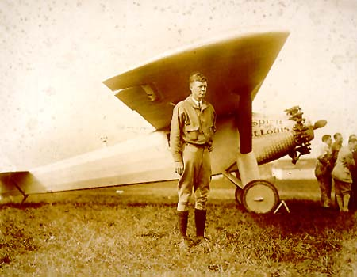
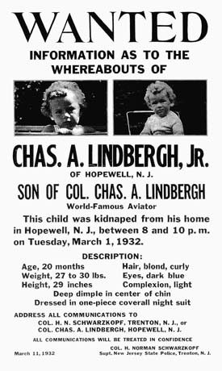
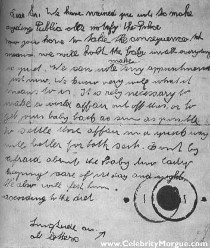
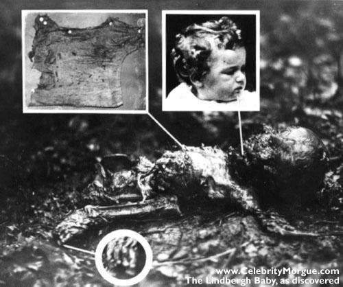
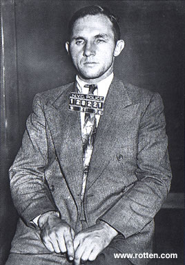

|
www.CelebrityMorgue.com
LindberghIn the Spirit of St. Louis, on May 20, 1927 Charles A. Lindbergh becomes the first man to cross the Atlantic ocean solo, in 33.5 hours. He becomes an instant worldwide celebrity of the first order.
KidnappedOn March 1, 1932, an unknown person kidnaps Lindbergh's son, aged 20 months, from their residence in Hopewell, New Jersey. The child had been sleeping since 7:30 PM, and discovered missing at 10:00 PM. But a mere two months prior, Charles Lindbergh played a prank on the household where he pretended the child was kidnapped. This time however, the threat was real, and a ransom note was discovered on the windowsill of the nursery.
RansomThe second of thirteen ransom notes: Dear Sir. We have warned you note to make anything public also notify the police now you have to take consequences -- means we will have to hold the baby until everything is quite. We can note make any appointments just now. We know very well what it means to us. It is realy necessary to make a world affair out of this, or to get your baby back as soon as possible to settle those affair in a quick way will be better for both -- don't be afraid about the baby -- keeping care of us day and night. We also will feed him acording to the diet. We are interested to send him back in gut health. And ransom was made aus for 50000$ but now we have to take another person to it and probably have to keep the baby for a longer time as we expected. So the amound will be 70000 20000 in 50$ bills 25000$ in 20$ bill 15000$ in 10$ bills and 10000 in 5$ bills Don't mark any bills or take them from one serial nomer. We will form you latter were to deliver the mony. But we will note do so until the Police is out of the cace and the pappers are quite. The kidnapping we prepared in years so we are prepared for everyding.
DiscoveryA ransom of $50,000 is paid in gold certificates. This excuse is used by President Roosevelt to recall all gold certificates everywhere in the U.S., on punishment of ten year jail sentence. Oh, what conspiracy hath necessity wrought! But then.. May 12 1932, the decomposed and animal-eaten body of Lindbergh's son is discovered by truck driver William Allen, about two miles from the family home. Cause of death was apparently a fractured skull, and Lindbergh identified the body though a birth defect of one of the toes. The aviator ordered the body cremated, without a full autopsy.
HauptmannBruno Richard Hauptmann, an illegal German immigrant, was arrested on September 19, 1934 with a ransom bill on his person. Furthermore he had hidden in his garage $14,000 of the Lindbergh ransom money. Though he denied all involvement, and the evidence on him is shaky at best, he was convicted in a circus atmosphere and executed on April 3, 1936 in Trenton, NJ.
|